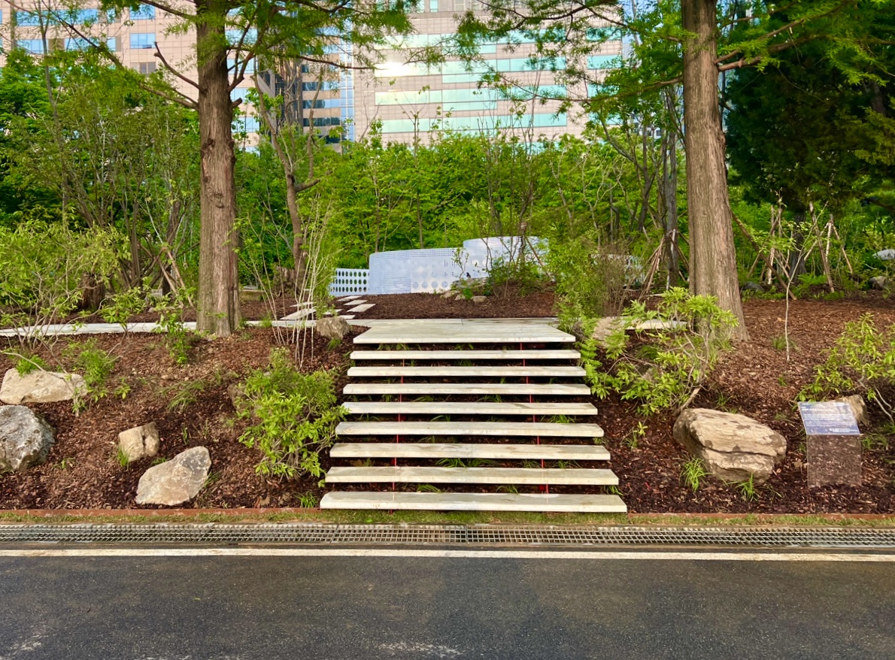

팝업
-
 #같이가치 #매달기부
#같이가치 #매달기부누구나 일상에서 건강한 숲을 누리도록
같이가치 바로가기
도시 속 나무심기를 위한 기부 -
 기념하고 싶은날! 서울 곳곳에 나무 한 그루 심어보는 건 어떠세요?
기념하고 싶은날! 서울 곳곳에 나무 한 그루 심어보는 건 어떠세요?특별한 날을 기념하는 새로운 방법
내 나무 갖기 바로가기
서울 마이트리
102,302
2024년 한 해 동안 나무의숲에서 전국 방방곡곡 심은
나무의 수는 총 102,302그루 입니다.

생명의 숲 활동이야기
-
사무처 이야기
서로배움학교 [산림써클] 1회차 - 청소년 환경활동가의 이야
숲에서 찾는 기후위기 해법, 시민과 함께하는 실천적 행동! (서울=사단법인 생명의숲) 기후위기가 고조되는 가운데, 사단법인 생명의숲은 2025년을 기후위기 대응의 전환점으로 삼고, 시민들과 함께 숲을 통해 해결책을 모색하는 "2025 지금지구 숲행동" 캠페인을 시작한다.
2025.03.24 정성엽사무처 이야기 2025 지금지구 숲행동 이야기[이어지구] 청와대 숲 산책 후기 _ 정치의 공간을 넘어, 숲으로 다시 열린 청와대에서 시민들과 함께 걷다
올해, 새로운 기획 활동으로 시민들과 함께하는 숲 탐방 프로그램을 준비했다. 서울 시내에서 시민들이 쉽게 접근할 수 있는 숲들을 검토한 끝에, 최종 목적지는 청와대로 정했다. 이유는 명확했다. 『청와대의 나무들』 저자이자 뛰어난 해설가인 박상진 교
2025.05.30 유영민2025 지금지구 숲행동 이야기2025 지금지구 숲행동 이야기나의 나무, 나의 공원 이야기 #선유도공원 #열번째
서울마이트리캠페인은 서울 곳곳의 공원, 우리 일상 가까이에 나무를 기부하는 캠페인입니다. 나무 한 그루로부터 시작하는 작은 관심이 지구에, 도시에, 우리 일상에 미치는 긍정적인 역할을 알리는 것이 목표입니다. 나의 나무, 나의 공원 이야기에서는 서울마이트리 캠페인 참여자가 기
2025.03.04 오주영2025 지금지구 숲행동 이야기사무처 이야기
[지켜지구] 4월 5일 산불피해지 숲행동 : 동해안 푸른 숲은 우리손으로
강릉부터 동해까지 휩쓸며 바다 앞에서야 멈춘 산불은 4,000ha가 넘는 숲을 잿더미로 만들었습니다. 사람의 인위적 방화로 일어난 불은 거센 바람을 타고 산과 마을을 태웠으며 인명피해까지 발생했습니다.
2025.04.11 생명의숲사무처 이야기